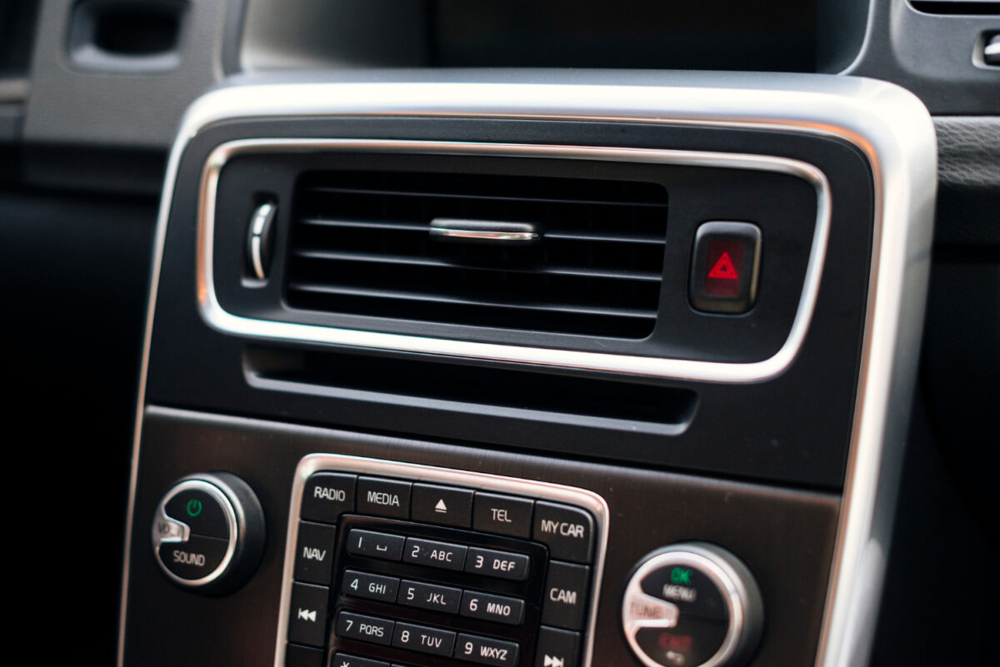

Przepływomierz powietrza? najczęstsze usterki i objawy

Przepływomierz powietrza to nieduże urządzenie znajdujące się zazwyczaj za filtrem powietrza. Odpowiada za pomiar ilości powietrza zasysanego do silnika. Ponadto dostarcza do komputera powiadomienie, dzięki czemu może on precyzyjnie dostosować dawkę wtrysku paliwa. Niestety przepływomierz, jak każdy element pojazdu, może ulec awarii. Jak rozpoznać usterkę tego komponentu? Jakie są przyczyny uszkodzenia przepływomierza? Objawy i powód awarii wskazaliśmy w dalszej części niniejszego artykułu.
Uszkodzony przepływomierz – przyczyny awarii
Zazwyczaj przyczyną uszkodzenia przepływomierza jest zaniedbanie filtra powietrza. Trzeba pamiętać, że element ten jest wyjątkowo wrażliwy na zanieczyszczenia docierające do jego wnętrza przez zabrudzony filtr. Z tego względu konieczne jest przestrzeganie terminów wymiany filtra. Do uszkodzenia przepływomierza może dojść również na skutek instalacji sportowych filtrów powietrza. Odpowiadają one za zwiększanie objętości powietrza. Niestety to wiąże się większą ilością zanieczyszczeń zasysanych przez przepływomierz Zdarza się również, że przepływomierz jest uszkodzony fabrycznie. Aby uniknąć zakupu komponentu z usterką, należy nabywać wyłącznie przepływomierze z zaufanych źródeł.
Uszkodzony przepływomierz – objawy
Jak rozpoznać awarię przepływomierza? Objawy uszkodzenia tego urządzenia to:
Zdiagnozowanie awarii to trudne zadanie. Na pierwszym etapie objawy uszkodzonego przepływomierza mogą być praktycznie niezauważalne.
Jak sprawdzić, czy przepływomierz jest uszkodzony?
Jak rozpoznać uszkodzenie przepływomierza? Objawy w benzynie i dieslu nie są jednoznaczne. Aby sprawdzić, czy doszło do awarii, najlepiej udać się do mechanika. Specjaliści wiedzą, jak szybko i skutecznie rozpoznać usterkę. Można również odpiąć kostkę przepływomierza i sprawdzić, czy to coś zmieni w pracy silnika. Jednak ta metoda nie dostarcza nam pewnej informacji.
Jazda z uszkodzonym przepływomierzem – czy jest bezpieczna?
Już wiadomo, jak rozpoznać uszkodzony przepływomierz powietrza. Objawy jednak nie są jednoznaczne, a większość kierowców nie sprawdza systematycznie stanu tego elementu. Należy jednak mieć na uwadze, że jazda z uszkodzonym przepływomierzem może być niebezpieczna i prowadzić do szybszego zużycia innych części. Z tego względu od razu po dostrzeżeniu niepokojących objawów należy udać się do mechanika. Nie wolno bagatelizować awarii przepływomierza i odkładać wizyty w warsztacie mechanicznym. Szybka diagnoza pozwala uniknąć poważniejszych usterek i bardziej kosztownych napraw.
Wymiana czy czyszczenie przepływomierza – na co się zdecydować?
Często nie ma konieczności wymieniania przepływomierza. W wielu przypadkach wystarczy go dobrze wyczyścić. Jednak podczas usuwania z niego zabrudzeń należy zachować szczególną ostrożność, aby nie uszkodzić delikatnej platynowej płytki. Do czyszczenia najlepiej zastosować specjalny środek. Jeśli mimo tych działań przepływomierz nie działa w odpowiedni sposób, warto sprawdzić napięcie wyjściowe i zasilające. Pierwsze z nich powinno wynosić 0-5 V, natomiast drugie 7,5-14 V. Dodatkowo zaleca się zmierzenie rezystancji pomiędzy złączami czujnika i sterownika. Jej wartość musi osiągać 0 omów. Nie pomogło czyszczenie czujnika przepływu powietrza? Objawy wskazują na poważną usterkę? Prawdopodobnie nie obędzie się bez wymiany przepływki. Ważne, aby nie kupować najtańszego zamiennika, ponieważ jego jakość może pozostawiać wiele do życzenia.
Sprawdzanie auta przed kupnem z Autotesto
Interesuje Cię zakup danego samochodu, jednak podejrzewasz uszkodzony przepływomierz w dieslu? Objawy nie są jednoznaczne? Skorzystaj z naszej oferty, zanim podpiszesz umowę kupna-sprzedaży. Dokładnie sprawdzimy auto, dzięki czemu unikniesz kosztów związanych z wymianą przepływomierza. Dodatkowo upewnisz się, czy pojazd jest wart swojej ceny oraz, czy jego licznik nie został cofnięty.